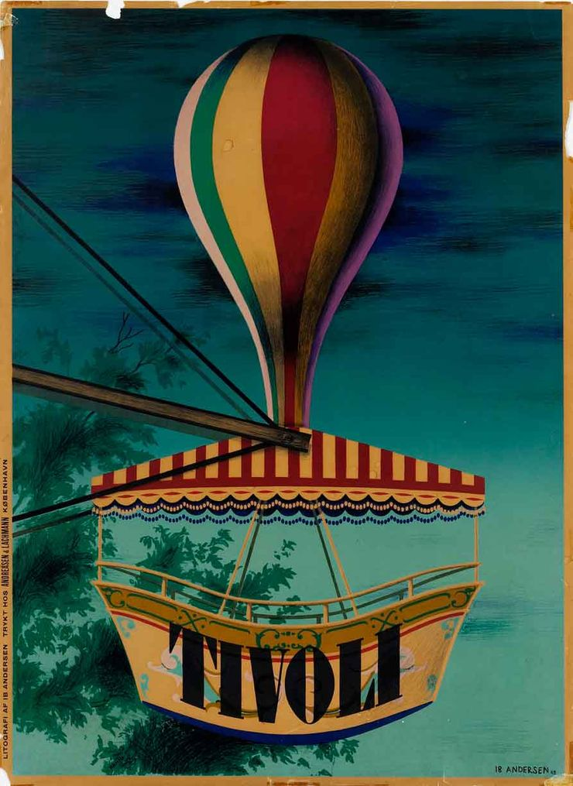
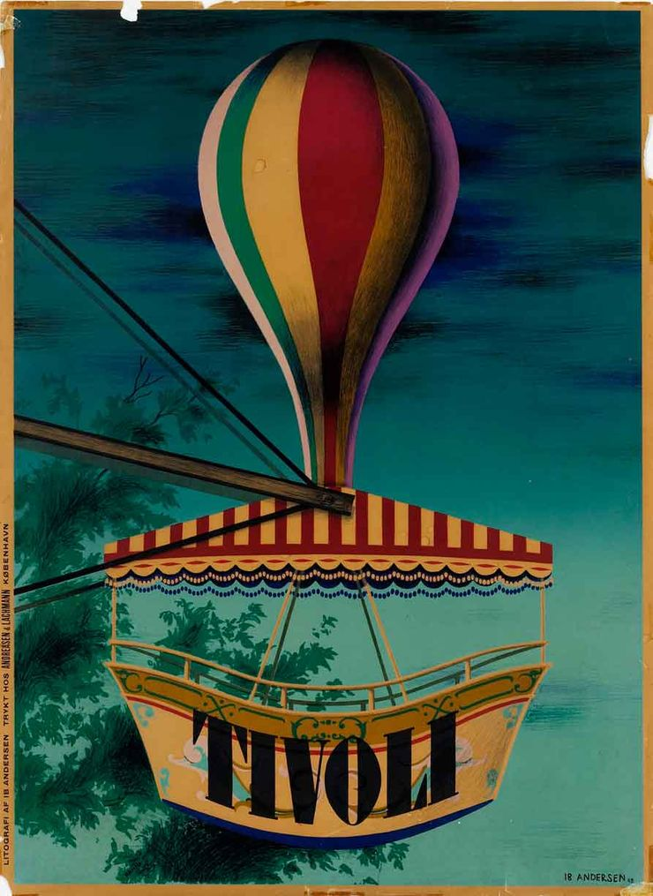

21.8.1907 – 2.4.1969
Om Ib Andersen
Ib Andersen blev uddannet arkitekt fra Akademiets Bygningsskole og tilknyttet Poul Henningsens tegnestue i slutningen af 1920´erne.
Arbejdsliv
Allerede i en tidlig alder gjorde han sig i høj grad gældende som bladtegner og arbejdede i en årrække indtil 1960´erne for Politiken. Her debuterede Ib Andersen med forsiden til Magasinet i 1927. Evnen som tegner havde han fået i vuggegave efter sin far plakatkunstneren Valdemar Andersen.
.svg) Kunstneriske særpræg
Kunstneriske særpræg
Ib Andersens plakater er mesterlige og præcise. Hans udtryk er præget af kubismens former og et fabulerende farvesprog. Balancen mellem tegning og typografi optog ham meget og han tegnede ofte selv sine bogstaver. Hans Tivoliplakat med luftgyngen fra 1943 står stadig stærkt og er fortsat efterspurgt.
Kubisme er en kunstnerisk stilperiode udviklet mellem 1908 og 1914. Ideen bag kubisme var at man kun kunne beskrive objektet hvis man viste det fra flere sider på én gang, stik imod perspektivlæren. Man ophæver det tredimensionelle rum og interesserer sig mere for beskrivelsen af motivet frem for det naturalistiske udtryk.
 



Hvad er Ib Andersen udannet som?

Arkitekt
Skomager
Bager